NOMAD: Non-Exclusive Memory Tiering via Transactional Page Migration
This page was written by an AI model to give a high-level overview of the paper. Please check the paper for detail: USENIX.
CXL memory and persistent memory (PM) let a CPU treat a remote, CPUless memory node as ordinary byte-addressable memory, within 2 to 3x of local DRAM in latency and bandwidth. Operating systems manage this as tiered memory: a fast "performance" tier and a slower "capacity" tier, with the kernel migrating pages between them. Every current tiering system, including Linux's own transparent page placement (TPP) and the PEBS-sampling-based Memtis, assumes exclusive tiering: a page lives in exactly one tier at a time. Promoting a page to fast memory means evicting something else and physically copying the data; demoting a page means the same copy in reverse.
Exclusive tiering breaks down exactly when tiering is most needed: when the working set size (WSS) of an application is close to or larger than the fast tier's capacity. The paper's own micro-benchmark (its Figure 1) shows that while TPP is actively migrating pages under such pressure, a baseline that disables migration entirely beats it, because migration repeatedly makes the page inaccessible and the 3-step unmap-copy-remap path is expensive. Page promotion in TPP is synchronous and on the program's critical path: a page fault blocks the thread, and Linux's lazy, batched hot-page detection can force up to 15 minor page faults to promote a single page. Memtis avoids the critical-path cost with hardware sampling (PEBS) and a background thread, but sampling only catches cache misses, so pages that stay hot in the cache are invisible to it and get mistakenly treated as cold.
The paper's fix has two parts. Non-exclusive memory tiering lets a promoted page keep a shadow copy on the slow tier instead of being removed from it, the way multi-level CPU caches are neither strictly inclusive nor exclusive. If the fast-tier copy is never written, demoting it later is just a page-table remap back to the still-valid shadow, with no data copy at all. Transactional page migration (TPM) makes the promotion itself non-blocking: the page is copied to the fast tier while it is still mapped and accessible on the slow tier, and only its dirty bit is cleared and watched. If nothing wrote the page during the copy, the migration commits by remapping the page table to the new location; if the page was dirtied, the copy is discarded and retried later. The page is inaccessible only for the brief final remap step, not for the whole copy.
NOMAD, the Linux implementation of both ideas, keeps Linux's existing hot/cold page detection (the active/inactive LRU lists and hint page faults) and only changes how migration happens: TPM for promotions, a one-way shadow-page mechanism (tracked via an XArray and a spare PTE bit) for cheap demotions, and a reclamation policy that frees shadow pages first under memory pressure to avoid out-of-memory errors. Evaluated with micro-benchmarks and real applications (Redis, PageRank, Liblinear) on four hardware platforms spanning two FPGA-based CXL prototypes, an Intel Optane PM system and a Micron CXL module on AMD Genoa, NOMAD achieves up to 6x the performance of TPP under memory thrashing and outperforms Memtis by as much as 130% when the working set fits in fast memory, though it can still underperform Memtis under severe, sustained thrashing.
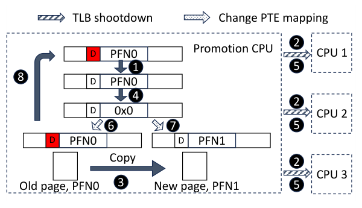
Key takeaways
- All current OS tiering (TPP, Memtis, Nimble, AutoTiering) assumes exclusive placement: a page is in exactly one tier. That forces a full data copy on every promotion and demotion.
- Non-exclusive tiering: keep a shadow copy of a promoted page on the slow tier. If it is never written, demoting it later is a cheap page-table remap, not a copy.
- Transactional page migration (TPM): copy a page to the fast tier while it stays mapped and accessible on the slow tier; commit by remapping only if the dirty bit shows no write occurred during the copy, otherwise abort and retry.
- NOMAD changes only the migration mechanism, not Linux's existing hot-page detection (LRU lists, hint page faults), and adds shadow-page indexing (XArray) plus priority reclamation of shadow pages to prevent OOM.
- Across four platforms and Redis/PageRank/Liblinear, NOMAD is up to 6x faster than TPP under thrashing and up to 130% faster than Memtis when the WSS fits in fast memory, but both NOMAD and TPP can trail Memtis under severe, sustained thrashing.
From exclusive page swapping to transactional, non-exclusive migration
Why exclusive, synchronous migration is expensive, how TPM makes promotion non-blocking, how shadow pages make demotion cheap, and how the pieces fit into Linux.
1 · Caching, tiering, and why the old assumptions no longer hold
Caching keeps data in a slow tier and replicates hot copies to a fast tier (inclusive: a page can be in both). Tiering actively relocates data, keeping each page in exactly one tier (exclusive). For decades, OS tiering between DRAM and disk was clearly exclusive-tiering territory because disk is 2 to 3 orders of magnitude slower and block-addressed. CXL memory and Optane PM are byte-addressable and only 2 to 3x slower than DRAM, so the assumption that a hot page must be moved to the fast tier to be usable no longer automatically holds, and the cost of the move itself becomes comparable to the benefit.
2 · What exclusive, synchronous tiering costs
The paper diagnoses two failures in the state of the art, using TPP (Linux's default CXL tiering policy) as the example.
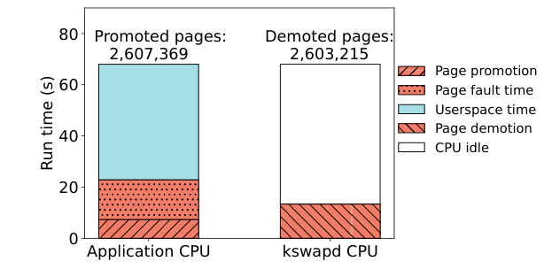
- Migration is expensive and blocking. A page migration is a trap to the kernel, a PTE lock and unmap, a TLB shootdown to every core that cached the PTE, a content copy, and a remap. TPP's promotion is synchronous: a user access to a protected slow-tier page triggers a minor page fault and the thread blocks until the copy and remap finish. Because Linux moves pages to the active LRU list in batches of up to 15 requests, promoting one page can cost as many as 15 minor page faults.
- Exclusive placement causes thrashing. When the WSS exceeds the fast tier, hot pages are continuously swapped in and cold pages swapped out. The paper's Figure 1 shows TPP's bandwidth during active migration falling below a baseline that disables migration entirely, and TPP never reaching a stable state once WSS exceeds fast-memory capacity.
- Sampling-based tracking (Memtis) under-migrates. PEBS samples LLC misses, TLB misses and retired stores to infer hot pages. Pages that stay hot in the cache generate few or no misses, so Memtis can fail to detect them as hot even when the fast tier has room, leaving them served from the slow tier.
Figure 2 in the paper's Section 2 shows that during active TPP migration, synchronous promotion and page-fault handling on the application's own core dominate run time, while the demotion core (handled asynchronously by kswapd) sits mostly idle. This localizes the bottleneck: it is the on-demand promotion path, not demotion, that must become asynchronous.
3 · Design goals and what NOMAD leaves alone
NOMAD does not change how the OS decides a page is hot or cold; it relies on Linux's existing LRU-based memory tracing (the active/inactive lists and the PG_referenced/PG_active flags) and does not modify initial page placement (pages are still allocated to the fast tier first, spilling to the slow tier only when fast memory is full). The two things NOMAD changes are: how a promotion is carried out (transactionally, asynchronously) and what happens to the page the promoted data came from (kept as a shadow instead of discarded).
4 · Transactional page migration (TPM)
TPM clears a migrating page's protection bit up front and queues it, so further accesses do not trigger more page faults. It then runs as an eight-step transaction:
- Clear the page's dirty bit in its PTE, marking the start of the transaction.
- Issue a TLB shootdown to every core that has accessed the page, so any subsequent write is recorded in the PTE rather than hitting a stale, cached translation.
- Copy the page's content from the slow tier to a new page on the fast tier. The old page remains mapped and accessible to user programs during this copy.
- Atomically read and clear the whole PTE (
get_and_clear) to check the dirty bit and commit the transaction. - Issue a second TLB shootdown, since clearing the PTE unmaps the page; it is inaccessible from this point until the next step.
- Check whether the dirty bit was set during the copy.
- If clean: remap the PTE to the new fast-tier page frame number (PFN). The transaction commits.
- If dirty: discard the new copy, restore the original PTE, and retry the migration later. The transaction aborts.
The page is inaccessible only between steps 4 and 7/8, a short window, compared to the entire unmap-copy-remap span in ordinary synchronous migration.
5 · Interfacing TPM with Linux's hot-page detection
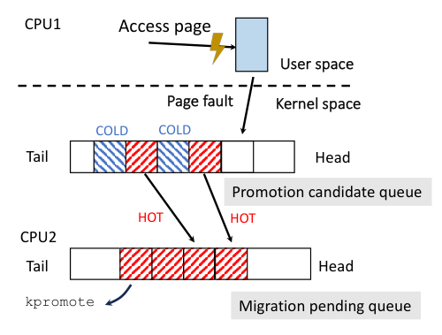
TPM needs a feed of candidate pages without reintroducing per-access page faults. NOMAD adds a promotion candidate queue (PCQ): when a hint page fault occurs, the faulting page joins the PCQ, and NOMAD checks the PCQ for pages that already have both the active and accessed LRU bits set. Those pages move to a migration pending queue, from which a background kernel thread, kpromote, attempts their transactional migration asynchronously. This bypasses Linux's batched (15-request) LRU-list management for migration purposes while still using the same LRU bits to judge temperature, so that if every TPM transaction succeeds, only one page fault is needed per promoted page.
6 · Non-exclusive tiering via page shadowing
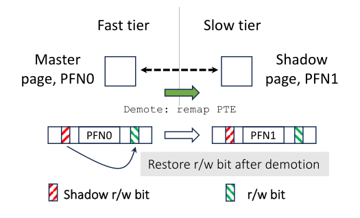
Once a TPM transaction commits, the old slow-tier page is not freed; it becomes a shadow copy of the new fast-tier (master) page. NOMAD indexes shadow pages in an XArray keyed by the fast-tier page's physical address, and sets a shadow flag in the master page's struct page. Demoting a page that still has a valid, unmodified shadow copy is then just a PTE remap back to the shadow's address, skipping the copy entirely.
To know whether the shadow is still valid, the master page is marked read-only, so any write triggers a page fault. Because read-write permission already drives other kernel mechanisms (such as copy-on-write), NOMAD cannot just overload the permission bit; instead it preserves the page's real permission in a spare PTE software bit, the shadow r/w bit. A write fault on a shadowed page is a shadow page fault: it restores the real permission from the shadow r/w bit and discards the shadow, after which the write proceeds. Read-only master pages incur no extra cost; writable pages pay one extra page fault the first time they are written after being shadowed.
7 · Keeping shadow pages from causing out-of-memory errors
Shadow copies consume extra memory, which exclusive tiering never needed to budget for. NOMAD reclaims shadow pages in two situations: when kswapd runs because free memory has fallen below the low watermark, NOMAD has it reclaim shadow pages first, before ordinary pages; and on a memory allocation failure, NOMAD frees shadow pages, targeting ten times the number of pages requested (or all shadow pages, if fewer) to avoid repeated allocation failures.
8 · A limitation: multi-mapped pages
TPM's two TLB shootdowns must reach every core with a cached translation of the page. For a page mapped by multiple processes or page tables, this means multiple simultaneous shootdowns, and the paper finds that the IPI overhead of coordinating them can outweigh TPM's benefit. NOMAD therefore falls back to Linux's default synchronous migration for multi-mapped pages, and notes that emerging lightweight, broadcast- or RPC-based TLB shootdown hardware (on ARM, and planned for future AMD and Intel chips) would let TPM be extended to this case.
9 · Implementation
NOMAD and TPP are implemented as patches to Linux v5.13-rc6; Memtis is run on v5.15.19, the version it was originally released for. The evaluation setup, baselines and results are covered in the Evaluation tab.
Evaluation
Four hardware platforms, controlled micro-benchmarks across three working-set regimes, and three real applications, each compared against TPP and two Memtis configurations.
All platforms fix the fast tier (local DRAM) at 16 GB for micro-benchmarks, so the comparison isolates the effect of tiering policy rather than tier size; this limit is lifted for the large-RSS real-application tests. Memtis is tested in two cooling configurations, and is excluded from platform D because it depends on Intel PEBS, which has no AMD equivalent in the paper's setup (AMD's IBS is not supported by Memtis).
| Platform | CPU | Fast tier (DRAM) | Slow tier | Read latency fast/slow (cycles) |
|---|---|---|---|---|
| A | 4th Gen Xeon Gold, 2.1 GHz | 16 GB DDR5 | Agilex-7 FPGA CXL, 16 GB DDR4 | 316 / 854 |
| B (engineering sample) | 4th Gen Xeon Platinum, 3.5 GHz | 16 GB DDR5 | Agilex-7 FPGA CXL, 16 GB DDR4 | 226 / 737 |
| C | 2nd Gen Xeon Gold, 3.9 GHz | 16 GB DDR4 | 6× Optane 100 PM, 256 GB DDR-T | 249 / 1077 |
| D | AMD Genoa 9634, 3.7 GHz | 16 GB DDR5 | 4× Micron CXL, 256 GB | 391 / 712 |
Baselines: TPP and NOMAD on kernel v5.13-rc6; Memtis-Default (2,000k-sample cooling) and Memtis-QuickCool (2k-sample cooling) on v5.15.19; a "no migration" baseline for application tests. Workloads: a Zipfian-access micro-benchmark with small (10 GB), medium (13.5 GB), and large (27 GB) working set sizes; and Redis (YCSB workload A, 50/50 read/write), PageRank (2²⁶-vertex synthetic graph), and Liblinear (L1-regularized logistic regression). Metrics: read/write bandwidth (MB/s), throughput (kOps/s), normalized application speed, average cache-line access latency (cycles), and transactional-migration success-to-abort ratio.
With a small working set, NOMAD matches TPP once stable and beats Memtis, which never finishes migrating
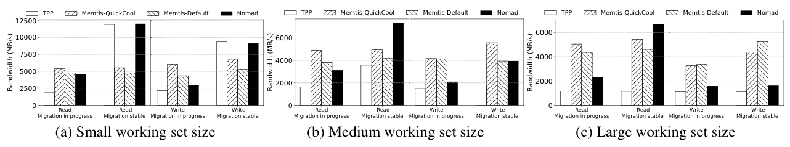
What it shows. Figure 7 (platform A) plots read and write bandwidth for TPP, Memtis-Default, Memtis-QuickCool and NOMAD, separately for the transient "migration in progress" phase and the "migration stable" phase, at small, medium and large WSS. For small WSS (10 GB, fits entirely in the 16 GB fast tier), NOMAD and Memtis reach similar read bandwidth during the transient phase; NOMAD trails Memtis on writes there due to occasional aborted transactions and shadow-page bookkeeping. In the stable phase, NOMAD and TPP converge to similar bandwidth, while Memtis achieves as low as 40% of their bandwidth.
What to take from it. Memtis's weakness is under-migration: the paper's companion migration counts (its Table 2) show Memtis performing far fewer promotions than TPP or NOMAD for the same workload, so most accesses are still served from slow memory even once Memtis is "stable." A shorter cooling period (QuickCool) that migrates more aggressively closes part of this gap, suggesting PEBS sampling is not timing migrations accurately rather than migration being unnecessary.
On the Optane PM platform, NOMAD's advantage over TPP holds, but all page-fault-based approaches struggle under severe thrashing
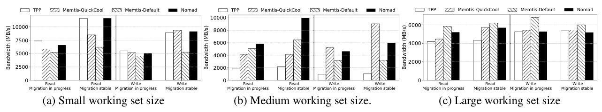
What it shows. Figure 8 repeats the same three-WSS comparison on platform C (Optane PM as the slow tier, the only platform where Memtis has full PEBS capability). At medium WSS, both NOMAD and TPP perform more page migrations than Memtis under memory pressure, which costs more during the transient phase, but NOMAD significantly outperforms TPP once stable. At large WSS, with continuous severe thrashing, both NOMAD and TPP underperform Memtis in almost all cases, though NOMAD consistently and significantly outperforms TPP throughout.
What to take from it. Page-fault-based, per-page migration decisions (TPP, NOMAD) do not scale gracefully to severe, sustained thrashing: migrating a page as soon as it is accessed can be futile when the WSS vastly exceeds fast-memory capacity. NOMAD's transactional, non-exclusive mechanism reduces but does not eliminate this cost relative to TPP.
On a platform with a narrower DRAM/CXL performance gap, NOMAD's gains over TPP are largest
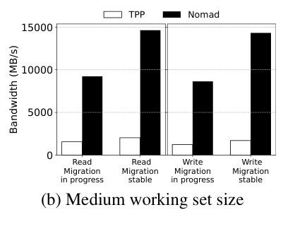
What it shows. Figure 9 compares TPP and NOMAD only (Memtis is not evaluated on platform D, since it needs Intel PEBS and the platform uses an AMD Genoa processor) across the same three WSS regimes. NOMAD outperforms TPP in every case, with the paper reporting the performance gap as more pronounced on this platform than on A, B or C, especially at medium WSS.
What to take from it. Platform D's faster, ASIC-based CXL memory narrows the fast/slow performance gap relative to the FPGA-based prototypes and Optane PM. The paper's interpretation is that as the two tiers converge in speed, the software overhead of synchronous migration (TPP) becomes a proportionally larger share of total cost, so asynchronous, transactional migration (NOMAD) has more overhead to recover.
Even in a sampling-friendly workload, PEBS-based Memtis fails to move all hot data into fast memory
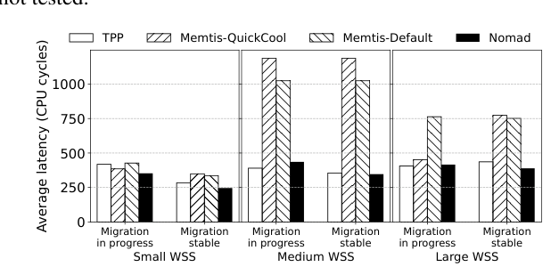
What it shows. Figure 10 reports average cache-line access latency on platform C for a point-chasing benchmark designed so that every access generates an LLC miss (and so is visible to PEBS), across small, medium and large WSS, in the migration-in-progress and migration-stable phases. When WSS exceeds fast-tier capacity, Memtis's latency is close to slow-memory performance (around platform C's 1077-cycle slow-tier read latency), while NOMAD and TPP achieve latency close to DRAM performance (around the 249-cycle fast-tier figure from Table 1).
What to take from it. Even under conditions favorable to sampling (every access is a guaranteed LLC miss), Memtis leaves most hot pages in slow memory once the WSS exceeds capacity, while page-fault-based tracking (TPP, NOMAD) promotes hot pages promptly. The paper frames this as a fundamental limitation of indirect, miss-based hardware sampling, not an implementation detail of Memtis.
A high migration success rate does not predict good application performance
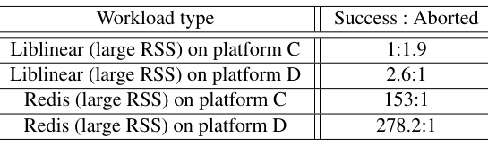
What it shows. Table 4 reports the ratio of committed to aborted transactional migrations for Liblinear and Redis with large RSS, on platforms C and D. Liblinear has a low success rate (1:1.9 on platform C, 2.6:1 on platform D), while Redis has a very high success rate (153:1 on platform C, 278.2:1 on platform D).
What to take from it. NOMAD performs excellently on Liblinear despite its low success rate, and poorly on Redis with large RSS despite its high success rate. The paper's explanation: a low success rate means the pages NOMAD is trying to migrate are also being actively written by other processes, i.e., they really are hot, so even repeated, partly-aborted migration attempts eventually place them correctly and help performance. A high success rate with poor performance suggests the migrated pages were not where the real bottleneck was.
For a scan-heavy, non-latency-sensitive workload, tiering barely matters
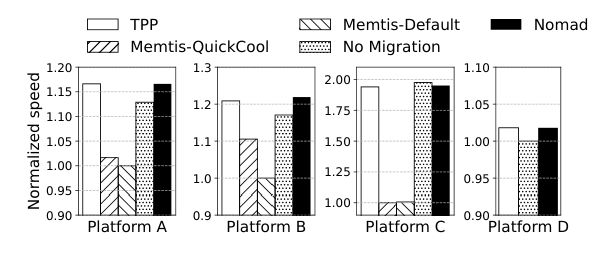
What it shows. Figure 12 shows PageRank's normalized speed (relative to the slowest configuration tested) on all four platforms, comparing no-migration, TPP, Memtis-Default, Memtis-QuickCool and NOMAD, with a 22 GB RSS spanning both tiers. The paper reports negligible variance between the migrating approaches and the no-migration baseline on every platform, with Memtis consistently the least efficient of the group.
What to take from it. For an application whose access pattern does not concentrate heavily on a small hot set, extending capacity into CXL/PM memory costs little even with no page migration at all, and NOMAD's migration overhead is small enough not to hurt this workload. Migration's benefit is workload-dependent, not universal.
For a workload with a genuinely hot, migratable set, NOMAD and TPP beat both Memtis and no migration
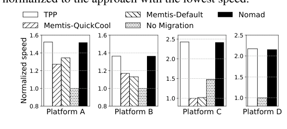
What it shows. Figure 13 shows Liblinear's normalized speed (10 GB RSS, all pages pre-demoted to slow memory) across all four platforms. NOMAD and TPP both substantially outperform Memtis and the no-migration baseline on every platform, with the paper reporting improvements ranging from 20% to 150%.
What to take from it. When the WSS is smaller than the fast tier and migration is clearly beneficial, both page-fault-based approaches (TPP, NOMAD) exploit it fully; Memtis's sampling delay costs it most of the available gain here, the opposite situation from Result 6's PageRank case.
At much larger RSS, NOMAD's advantage over TPP persists, but it does not always close the gap to Memtis
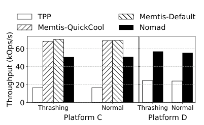
What it shows. Figures 14 to 16 repeat the Redis, PageRank and Liblinear tests on platforms C and D with RSS scaled well beyond 32 GB (Redis: 36.5 GB; PageRank: up to 100 GB falling to 45 to 50 GB; Liblinear: a much larger model), under both a "thrashing" initial placement (all pages start demoted) and a "normal" one (pages start in the fast tier). For large-RSS Redis (Figure 14), NOMAD outperforms TPP via graceful degradation but falls short of Memtis, and the initial placement strategy does not substantially change the eventual, converged result. For large-RSS PageRank (Figure 15), NOMAD achieves about 2x TPP's performance on both platforms and is slightly ahead of Memtis on platform C. For large-RSS Liblinear (Figure 16), NOMAD sustains consistently high performance across all cases while TPP's performance declines sharply, which the paper attributes to inefficiency visible as frequent bursts of kernel CPU time during TPP's execution.
What to take from it. NOMAD's relative position versus Memtis at large scale depends on the application: it wins for PageRank and Liblinear but trails for Redis, consistent with the paper's broader finding that page-fault-based migration (TPP, NOMAD) is most effective on write-light, read-dominated access patterns, while Memtis's background, sampled approach can be more robust for Redis's update-heavy, 50/50 read/write workload.
kpromote thread or XArray indexing in isolation, and it leaves a dynamic policy that throttles migration during detected thrashing (rather than relying on the existing LRU-based policy throughout) as future work.FAQ
Q·What problem is NOMAD actually solving?▾
Moving a page between a fast and a slow memory tier (promotion or demotion) is itself expensive: it requires locking and unmapping the page, a TLB shootdown, copying its contents, and remapping it, during which the page is inaccessible. Current systems do this on every single promotion and demotion because they assume a page can only live in one tier at a time. NOMAD cuts this cost by keeping a reusable copy on the slow tier and by making the copy step non-blocking.
Q·What exactly is "non-exclusive" tiering?▾
A promoted page's old location on the slow tier is not freed; it is kept as a shadow copy. As long as the fast-tier (master) copy is never written, that shadow stays valid, so demoting the page later is just a page-table remap back to the shadow, with no data copy. It is "non-exclusive" because, briefly, both the master and a valid shadow exist, which neither pure caching (always inclusive) nor traditional tiering (always exclusive) does.
Q·How is this different from how CPU caches handle inclusion?▾
The paper explicitly borrows the idea from multi-level CPU cache hierarchies, which are neither strictly inclusive nor strictly exclusive, to avoid unnecessary eviction or duplication of cache lines. NOMAD applies the same non-strict policy to OS-managed memory tiers, with the shadow copy playing a role similar to a cache line that a lower cache level is allowed to keep after an upper level also has it.
Q·What does "transactional" mean in transactional page migration?▾
A migration is treated like a database transaction: it copies the page speculatively while the page is still live and accessible, then checks a single condition (was the page written during the copy, as recorded in its dirty bit) to decide whether to commit (remap to the new location) or abort (discard the copy and retry later). This is what lets the page stay accessible for almost the entire migration instead of only after it fully completes.
Q·Does TPM need special hardware?▾
No. It uses two ordinary TLB shootdowns and the dirty bit already present in Linux's page table entries. The paper notes that the two shootdowns are costlier when a page is mapped by multiple processes, and that upcoming lightweight hardware TLB-shootdown mechanisms (broadcast-based on ARM, RPC-like proposals for x86/AMD) would reduce this cost further, but none are required for NOMAD to work today.
Q·What happens if a page is written while it is being migrated?▾
The write sets the page's dirty bit, which NOMAD detects when it tries to commit the transaction. The new copy on the fast tier is discarded, the original page table entry is restored, and the migration is retried later rather than being forced through with stale or inconsistent data.
Q·How does NOMAD avoid running out of memory because of all these shadow copies?▾
NOMAD has kswapd reclaim shadow pages before ordinary pages whenever free memory drops below the low watermark, and additionally frees shadow pages (targeting ten times the requested amount) whenever a memory allocation fails, before that allocation is allowed to fail outright. The paper's robustness test shows shadow memory usage shrinking as resident set size grows and approaches the tiered memory's total capacity.
Q·Does NOMAD change how the OS decides which pages are hot?▾
No. It keeps Linux's existing active/inactive LRU-list tracking and hint page faults exactly as they are; it only changes the mechanism used to carry out a migration once a page has been identified as a promotion candidate. This is a deliberate scoping choice; the authors treat building a better hotness-detection policy as separate, future work.
Q·Why does NOMAD sometimes lose to Memtis?▾
Under severe, sustained thrashing (working set far larger than fast memory), NOMAD, like TPP, decides migration per page, on access, which can waste effort on pages that will be evicted again almost immediately. Memtis's background, sampled approach performs far fewer migrations in this regime and, despite missing some genuinely hot pages, avoids much of this waste, so it can come out ahead when thrashing is severe and continuous.
Q·Is page migration always worth doing?▾
The paper's own results say no. For PageRank, a scan-heavy workload without a small hot set, disabling migration entirely performs about as well as any tiering policy tested. For Redis under YCSB's largely random access pattern, every migration approach tested underperformed a no-migration baseline, because pages migrated to fast memory were unlikely to be accessed again. The paper calls for a policy that can dynamically turn migration off when the workload does not benefit from it.
Q·What is the actual overhead when a transactional migration aborts?▾
An aborted migration wastes the CPU cycles and memory bandwidth spent copying the page, plus the two TLB shootdowns, without any demotion or promotion benefit. The paper does not isolate this cost numerically but shows (Table 4) that even workloads with a low success-to-abort ratio, like Liblinear, can still perform very well overall, implying the wasted work is not necessarily the dominant cost.
Q·Could NOMAD be combined with Memtis's hardware sampling?▾
The paper lists this as future work: using Memtis-style PEBS-based frequency sampling to decide which pages to migrate, while using NOMAD's transactional, non-exclusive mechanism to carry the migration out, aiming to combine accurate hotness detection with cheap, non-blocking migration.